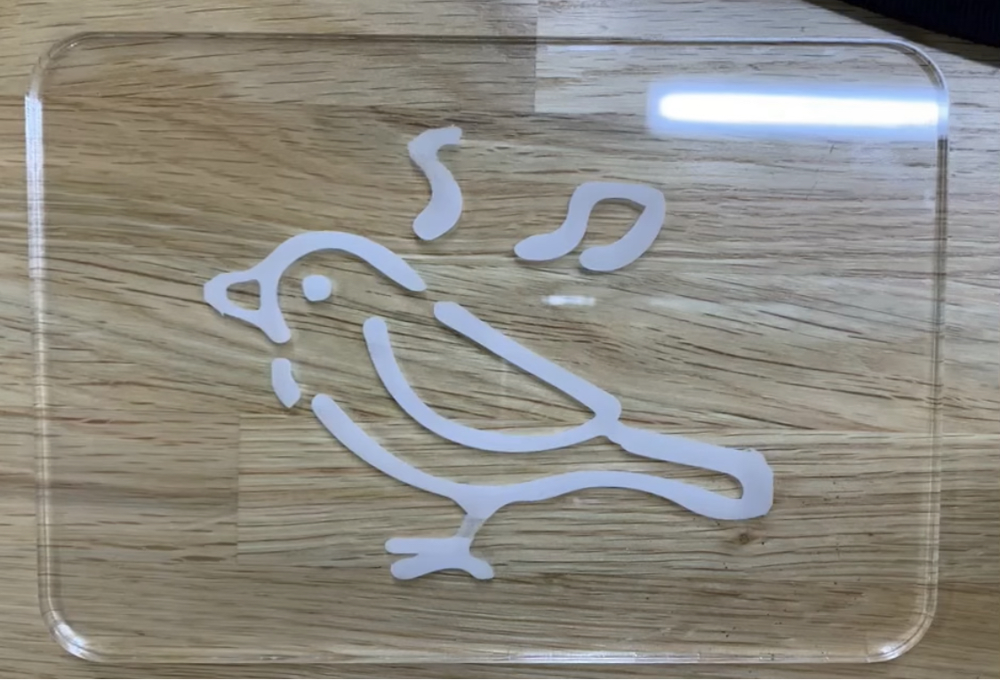

1.アイディアのスケッチ
2.概要
鳥✖️リラックス🟰ベッドサイド用 鳥のランプ
3.プロセスメモープロセス・必要なモノやステップ・やるべきこと
構想段階
■は考えないといけないこと
●は疑問、具体的にやること
→はやったこと
[2023.05.29]
・お互いの趣味や日常のイライラを書き出すことに
[好きなもの・こと]
動画を見ること
ゲームをすること
鳥
蝶々
[嫌いなもの・こと]
雨の日
寝付けないとき
エレベーターが来ない
干すときに靴下を揃える
この中から、「鳥」と「寝付けない」を選択
●鳥✖️リラックス🟰ベッドサイド用 鳥のランプ
[2023.06.05]
 ■メディアアートかIoTサービスのどちらを採用するか
■メディアアートかIoTサービスのどちらを採用するか
●ベッドサイド用 鳥のランプを作成していこう！
■どのようにランプを光らせるか、音を流すか
●鳥のデザインを折り紙風にして、直線は避けるように
・LEDライト
・アクリル板 UVプリンターRoland VersaUV LEF-12
・木材 レーザー加工機trotec Speedy 100 or（大型CNCルーターSHOPBOT PRS Standard 96-48）
・電球ボトル
・消臭ビーズ無香料
→デジファブにあるアクリル板で鳥を作る（紫色にする）
[2023.06.12]
 ■鳥のデザインをどうするか、間に合いそうにないので変更
■鳥のデザインをどうするか、間に合いそうにないので変更
●直接アクリル板に直接鳥のイラストを彫っていく
●土台を透明にすることで森感を作り出していく
↑土を必要としないエアプランツや、フェイクグリーンを入れる
●LEDテープで光らせる
→LEDテープを購入、木材等購入
[2023.06.19]
●全体のサイズを確認
●土台の確認
🔳イラレで使用できない画像だったので
→鳥のイラストデザインを変更
🔳アクリル板の色をカラーではなくクリアに変更
[2023.06.22]

●ファブラボでレーザーカッターを行う
→メインのアクリルは無事に完成
（もしかしたら、掘りが浅いかもしれないかな、、、）
[2023.07.10]
アクリルを小鳥の絵柄１つではなく
4層にして立体感が出るように変更！
土台部分完成
1枚ずつ色を変える
[2023.07.12]
木製の箱を作成
ハンダを綺麗にやり直す
→明日に持ち越し
[2023.07.13]
昨日の続き
[2023.07.15]
完成！
4.使用したモノ（リンクも）
アクリル板・LEDテープ・木材